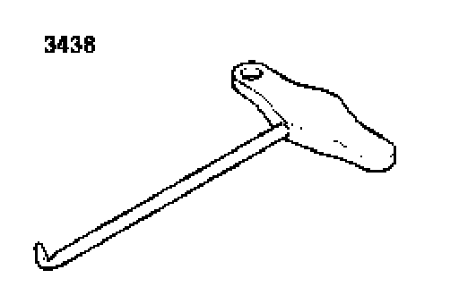
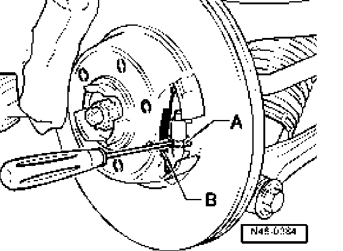

FN 44
Brake shoes, removing and installing
Special tools, testers and auxiliary items required

^ Hook 3438
Removing
- Remove wheels.
- Remove brake pads go to Brake pads: Service and Repair
- Remove carrier.
- Turn brake disc until parking brake adjustment nut is visible through one of the lug bolt holes.
Parking brake, resetting:

- Turn adjustment nut - A - against the resistance of tension spring - B -.
- Remove brake disc/brake drum.
- Remove springs.
- Remove pins with springs and remove brake shoes.
Installing
Installation is in reverse sequence to removal.
- Adjusting parking brake go to Parking Brake Shoe: Adjustments